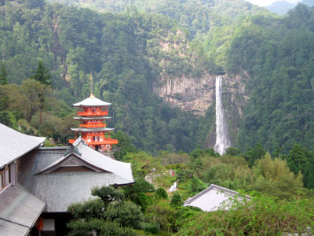
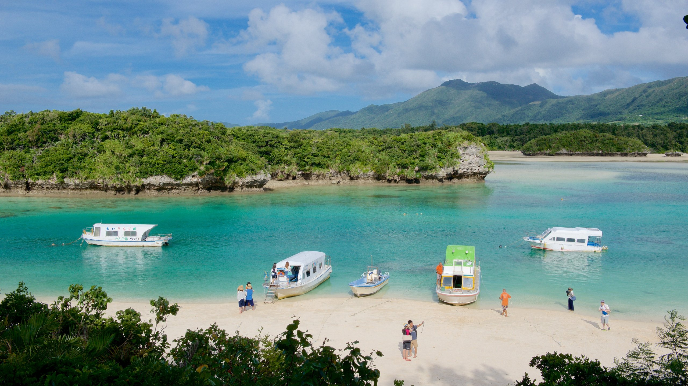
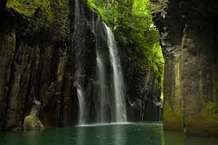
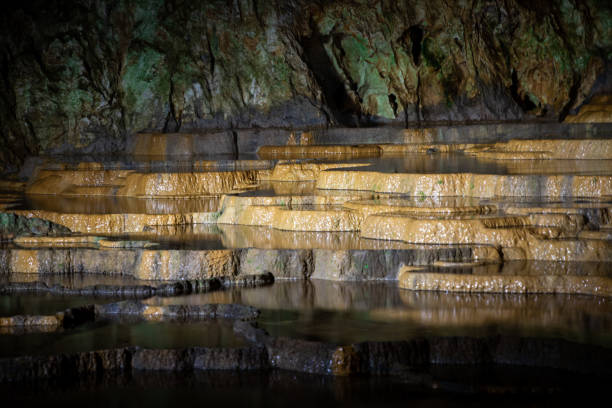

O Fuji é a montanha mais alta do Japão, com quase quatro mil metros de altura, e está entre as principais atrações no roteiro dos turistas que visitam o país. A apenas 100 quilômetros de Tóquio, ele pode até ser visto da capital em dias com bom tempo. A última erupção do vulcão aconteceu há mais de 300 anos, mas isso não significa que ele não possa entrar em atividade a qualquer momento. Musa de muitos trabalhos artísticos do Japão, o belo monte nevado cercado por denso bosque e flores rosadas mal parece ser de verdade e certamente vale a visita.
Na província de Wakayama, no sul do Japão, está uma das quedas d'água mais famosas do país — se não a mais famosa. Atingindo 133 metros de altura e 13 de largura, as Cataratas de Nachi formam a queda única mais alta do país asiático. O templo em frente à queda tem três andares e é acompanhado de um espaço que expõe interessantes artefatos encontrados ali.
Quem foi que disse que o Japão não tem belíssimas praias? Localizada na ilha de Ishigaki, na província de Okinawa, a Baía de Kabira é um verdadeiro paraíso, com enormes bancos de areia branca, águas azuis e exuberante vegetação. Infelizmente, nadar não é permitido, mas só as paisagens certamente já valem a pena. Também é possível passear de barco e visitar algumas interessantes ilhotas ao redor.
Localizado nos arredores da cidade de mesmo nome, o Takachiho é de fato magnífico. Formadas por uma erupção vulcânica, suas paredes de pedra parecem ter sido talhadas à mão. Para completar a paisagem, uma exuberante cachoeira cai no rio de águas azuis lá embaixo
A Akiyoshido é a maior caverna do Japão, com cerca de 10 quilômetros quadrados de grutas, peculiares formações rochosas e rios subterrâneos, com algumas câmaras que atingem até 80 metros de altura. Os visitantes podem andar por somente um quilômetro dentro da caverna, o que já é suficiente para deixar qualquer um impressionado. Há até um elevador para você poder olhar ao redor do alto